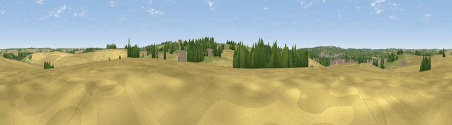

Winnall Down
#37052 in England · top 68% of its area beats it · near EastonThe view, rendered

A 360° render of this exact spot computed from the terrain model, tree cover and land cover — summer colours, afternoon light, calibrated against photographs of famous viewpoints. Real trees, hedges and buildings will differ in detail.
The panorama
Grey silhouette: terrain skyline in each direction (720 bearings, Earth curvature and refraction included). Dashed green: skyline with trees (+15 m) and buildings (+8 m) as obstacles. Blue strip: how far the ground is visible on each bearing.
Where the view opens
Wedge length = distance to the farthest visible ground on that bearing (vegetation-aware). Rings at 10, 25 and 50 km.
What fills the view
58% cropland · 21% grassland · 15% woodland · 6% built-up
Angular shares of the visible panorama (visual magnitude), not map area. Landscape diversity 0.48 (0–1 Shannon).
Key numbers
More beautiful places nearby
The staircase of upgrades: each row has a higher view potential than everything closer. Driving times are estimates from straight-line distance, calibrated against real road routing — check an actual route before setting out.
| Place | Direction | Drive | Score |
|---|---|---|---|
| Harley Hill | E · 1 km | ~4 min | 37.6 |
| Viewpoint near Chilcomb | SE · 3 km | ~6 min | 63.9 |
| Viewpoint near Sparsholt | W · 11 km | ~20 min | 66.9 |
| Beacon Hill | SE · 12 km | ~23 min | 71.7 |
| Viewpoint near Meonstoke | SE · 16 km | ~29 min | 74.8 |
| Viewpoint near Buriton | ESE · 23 km | ~38 min | 75.3 |
| Viewpoint near Buriton | ESE · 23 km | ~38 min | 80.0 |
| Beacon Hill | ESE · 32 km | ~50 min | 85.8 |
51.06937, -1.27636 · source: osm peak · position refined by local search. Computed location — check access rights before visiting.